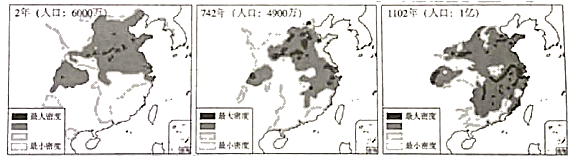

2020年北京市中考历史试题 · 选择题 第6、7、8、9、10题 · 对应解析
6．如图材料共同说明了唐朝（ ）
A．兴盛的原因B．农业的发展C．衰落的过程D．割据的结果
【分析】本题考查贞观之治、女皇武则天、开元盛世，知道材料共同说明了唐朝兴盛的原因。
【解答】唐太宗吸取前朝灭亡的教训，虚心纳谏，知人善用，他统治时期出现贞观之治的治世局面。武则天重视发展农业，继续实行发展农业生产，宣布贤才的政策，人称她的统治“政启开元，治宏贞观”；唐玄宗统治前期，整顿吏治，亲自选拔地方官员，出现了开元盛世的局面。故材料共同说明了唐朝兴盛的原因。
故选：A。
【点评】本题考查贞观之治、女皇武则天、开元盛世，考查学生的识记和理解能力，解题关键是熟练掌握基础知识。
7．唐朝时期，东亚国家与中国在语言文字、思想意识、社会组织、物质文明等方面联成一体，形成一个以中国为文化源的中华文化圈。以下促成这一文化圈形成的有（ ）
①日本遣唐使来华
②鉴真东渡
③新罗学习唐朝政治制度
④郑和下西洋
A．①②③B．①②④C．①③④D．②③④
【分析】本题主要考查了唐朝时期的对外交往的相关史实，由于唐朝对外交往频繁，唐朝时期，东亚国家与中国在语言文字、思想意识、社会组织、物质文明等方面联成一体，形成一个以中国为文化源的中华文化圈。
【解答】根据题干唐朝时期，东亚国家与中国在语言文字、思想意识、社会组织、物质文明等方面联成一体，形成一个以中国为文化源的中华文化圈。以下促成这一文化圈形成的有①日本遣唐使来华；②鉴真东渡；③新罗学习唐朝政治制度，A符合题意。④郑和下西洋，发生在明朝时期，与题干无关，排除。
故选：A。
【点评】本题主要考查了唐朝时期的对外交往的相关史实，注意基础知识的识记与理解。
8．如图《中国古代局部人口密度变化图》能反映出（ ）

A．中外文化交流B．经济重心南移
C．疆域面积扩大D．君主专制强化
【分析】本题考查中国古代经济重心南移，知道从唐朝中期开始的经济重心南移，到南宋时最后完成。
【解答】据图片看出，公元2年北方人口密度远远大于南方，742年南方人口密度迅速增长，到1102年南方人口密度超过了北方，图片反映的是经济重心南移，从唐朝中期开始的经济重心南移，到南宋时最后完成。
故选：B。
【点评】本题考查中国古代经济重心南移，考查学生的理解和分析能力，解题关键是掌握基础知识。
9．一位同学要按照北京城的历史沿革参观以下地点，顺序应为（ ）
①元大都城墙遗址
②明城墙遗址
③金中都水关遗址
A．①②③B．①③②C．②①③D．③①②
【分析】本题考查北京城的沿革。金政权、元朝、明朝都在北京定都。
【解答】根据所学可知，1115年阿骨打建立金政权，在今天北京定都；1271年忽必烈改国号为元，次年定都于大都（北京）；朱棣即位后开始修建北京城，1421年迁都北京。所以D为正确的顺序。
故选：D。
【点评】掌握在北京定都的政权，了解北京城的建成过程。
10．以下史实的历史作用的共同点是（ ）
郑成功收复台湾 | 清朝在台湾建制 |
明末荷兰殖民者侵占台湾。清初在东 南沿海抗清的郑成功打败荷兰侵略者， 收复台湾 | 郑成功后代割据台湾。清政府打败郑 氏军队，台湾归入清朝版图，设置台湾 府，隶属福建省 |
A．维护了祖国领土完整
B．加强了对西北地区的管辖
C．推行了闭关锁国政策
D．实现了清朝对全国的统治
【分析】本题考查郑成功收复台湾和清朝在台湾建制历史作用的共同点。注意题干信息和相关知识的准确把握。
【解答】据题干信息并结合所学知识可知，1624年，荷兰殖民主义者侵占中国台湾。1661年3月，郑成功从金门出发，进军台湾。包围了赤嵌楼和和台湾城。在高山族人民的支持下，1662年，荷兰总督被迫在投降书上签了字。至此，郑成功从荷兰侵略者手里收复了沦陷38年的我国神圣领土台湾。郑成功收复台湾，维护了中华民族的利益，捍卫了中国主权和领土的完整。1684年，清朝康熙时设台湾府，隶属福建省。台湾府的设置，加强了台湾同祖国大陆的联系，促进了台湾的开发，巩固了祖国的海防。A符合题意，BCD不符合题意。
故选：A。
【点评】本题注重考查学生的分析能力，本题的关键点是分析题干，注意准确识记郑成功收复台湾和清朝在台湾建制历史作用的相关知识。